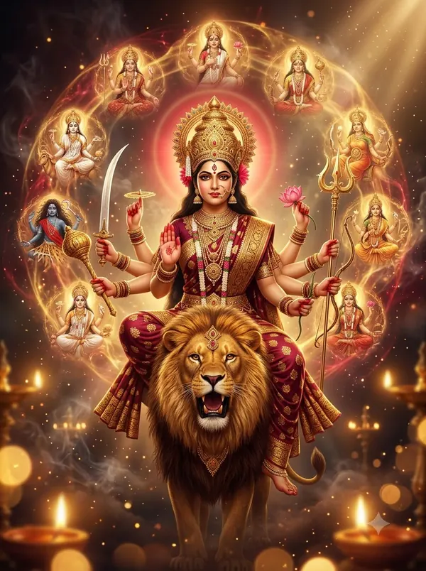

त्योहार कैलेंडर 2026–2027
हर बड़े व्रत-त्योहार की तारीख़, और वह सुबह से मनाया जाएगा या शाम/रात को। हर त्योहार पर क्लिक करके तिथि का समय और पूजा मुहूर्त देखें।

रोज़ काम आने वाला
- मंदिरों के लाइव दर्शनराम मंदिर, महाकाल, खाटू श्याम, गंगा आरती और 19 जगहें
- आज का चौघड़िया65 शहरों का शुभ समय
- जन्म तिथि और राशि कैलकुलेटरनाम अक्षर, नक्षत्र, तिथि वाला जन्मदिन
- पंचक कब है?21 अक्टूबर 2026 से 25 अक्टूबर 2026
- भद्रा कब है?आज और अगले 75 दिन
- खरमास कब है?16 दिसंबर 2026 से
- गंडमूल नक्षत्र कब है?आज और अगले 75 दिन
- प्रदोष व्रत कब है?पूरी सूची
- संकष्टी चतुर्थी कब है?पूरी सूची
- विनायक चतुर्थी कब है?पूरी सूची
- मासिक शिवरात्रि कब है?पूरी सूची
- दिवाली 2026: पाँचों दिन की तारीख़ेंपूरी सूची
- छठ पूजा 2026: चारों दिन की तारीख़ेंपूरी सूची
- सावन सोमवार 2027पूरी सूची
- त्योहार कब है? सीधे जवाबएकादशी, पूर्णिमा, अमावस्या और हर त्योहार
- करवा चौथ 2026: शहरवार चाँद निकलने का समयशहरवार समय
- दिवाली 2026: शहरवार लक्ष्मी पूजा मुहूर्तशहरवार समय
- छठ पूजा 2026: शहरवार अर्घ्य का समयशहरवार समय
- नवरात्रि 2026: अष्टमी-नवमी कब है?शहरवार समय
- दशहरा 2026: विजय मुहूर्त और रावण दहनशहरवार समय
सभी एकादशी पूर्णिमा और अमावस्या
अक्टूबर 2026
- सर्वपितृ अमावस्यादोपहर बाद (अपराह्न) में
- शारदीय नवरात्रि (घटस्थापना)सुबह से (उदया तिथि)
- दशहरा (विजयादशमी)दोपहर बाद (अपराह्न) में
- शरद पूर्णिमारात को (चंद्रोदय पर)
- करवा चौथरात को (चंद्रोदय पर)
नवंबर 2026
- अहोई अष्टमीशाम को (प्रदोष काल में)
- गोवत्स द्वादशी (वसु बारस)शाम को (प्रदोष काल में)
- धनतेरसशाम को (प्रदोष काल में)
- दिवाली (लक्ष्मी पूजा)शाम को (प्रदोष काल में)
- नरक चतुर्दशी (रूप चौदस, छोटी दिवाली)सुबह से (उदया तिथि)
- गोवर्धन पूजासुबह से (उदया तिथि)
- चित्रगुप्त पूजा (कलम-दवात पूजा)दोपहर बाद (अपराह्न) में
- भाई दूजदोपहर बाद (अपराह्न) में
- छठ नहाय-खायसुबह से (उदया तिथि)
- छठ खरनासुबह से (उदया तिथि)
- छठ पूजा (संध्या अर्घ्य)सुबह से (उदया तिथि)
- छठ उषा अर्घ्य (पारण)सुबह से (उदया तिथि)
- गोपाष्टमीसुबह से (उदया तिथि)
- अक्षय नवमी (आंवला नवमी)सुबह से (उदया तिथि)
- देवउठनी एकादशीसुबह से (उदया तिथि)
- तुलसी विवाहशाम को (प्रदोष काल में)
- बैकुंठ चतुर्दशीआधी रात (निशीथ काल) में
- कार्तिक पूर्णिमा (देव दीपावली)सुबह से (उदया तिथि)
दिसंबर 2026
- काल भैरव जयंतीआधी रात (निशीथ काल) में
- विवाह पंचमीसुबह से (उदया तिथि)
- गीता जयंती (मोक्षदा एकादशी)सुबह से (उदया तिथि)
- दत्तात्रेय जयंतीशाम को (प्रदोष काल में)
जनवरी 2027
फ़रवरी 2027
- मौनी अमावस्यासुबह से (उदया तिथि)
- वसंत पंचमीसुबह से (उदया तिथि)
- रथ सप्तमी (सूर्य जयंती)सुबह से (उदया तिथि)
- माघ पूर्णिमासुबह से (उदया तिथि)
मार्च 2027
- महाशिवरात्रिआधी रात (निशीथ काल) में
- होलिका दहनशाम को (प्रदोष काल में)
- होली (रंगवाली)शाम को (प्रदोष काल में)
- रंग पंचमीसुबह से (उदया तिथि)
- शीतला अष्टमी (बसौड़ा)सुबह से (उदया तिथि)
अप्रैल 2027
- चैत्र नवरात्रि (घटस्थापना)सुबह से (उदया तिथि)
- हिंदू नववर्ष (गुड़ी पड़वा, उगादी)सुबह से (उदया तिथि)
- गणगौरसुबह से (उदया तिथि)
- राम नवमीदोपहर (मध्याह्न) में
- हनुमान जयंतीसुबह से (उदया तिथि)
मई 2027
- परशुराम जयंतीशाम को (प्रदोष काल में)
- अक्षय तृतीयासुबह से (उदया तिथि)
- सीता नवमी (जानकी जयंती)दोपहर (मध्याह्न) में
- नृसिंह जयंतीशाम को (प्रदोष काल में)
- बुद्ध पूर्णिमा (वैशाख पूर्णिमा)सुबह से (उदया तिथि)
जून 2027
जुलाई 2027
- जगन्नाथ रथ यात्रासुबह से (उदया तिथि)
- गुरु पूर्णिमासुबह से (उदया तिथि)
- सावन शुरू (श्रावण मास आरंभ)सुबह से (उदया तिथि)
अगस्त 2027
- हरियाली तीजसुबह से (उदया तिथि)
- नाग पंचमीसुबह से (उदया तिथि)
- रक्षा बंधनदोपहर बाद (अपराह्न) में
- कजरी तीजसुबह से (उदया तिथि)
- हलषष्ठी (ललही छठ)सुबह से (उदया तिथि)
- कृष्ण जन्माष्टमीआधी रात (निशीथ काल) में
सितंबर 2027
- हरतालिका तीजसुबह से (उदया तिथि)
- ऋषि पंचमीदोपहर (मध्याह्न) में
- गणेश चतुर्थीदोपहर (मध्याह्न) में
- राधा अष्टमीदोपहर (मध्याह्न) में
- अनंत चतुर्दशी (गणेश विसर्जन)सुबह से (उदया तिथि)
- पितृ पक्ष आरंभ (पूर्णिमा श्राद्ध)दोपहर बाद (अपराह्न) में
- सर्वपितृ अमावस्यादोपहर बाद (अपराह्न) में
- शारदीय नवरात्रि (घटस्थापना)सुबह से (उदया तिथि)
अक्टूबर 2027
- दशहरा (विजयादशमी)दोपहर बाद (अपराह्न) में
- शरद पूर्णिमारात को (चंद्रोदय पर)
- करवा चौथरात को (चंद्रोदय पर)
- अहोई अष्टमीशाम को (प्रदोष काल में)
- गोवत्स द्वादशी (वसु बारस)शाम को (प्रदोष काल में)
- धनतेरसशाम को (प्रदोष काल में)
- नरक चतुर्दशी (रूप चौदस, छोटी दिवाली)सुबह से (उदया तिथि)
- दिवाली (लक्ष्मी पूजा)शाम को (प्रदोष काल में)
- गोवर्धन पूजासुबह से (उदया तिथि)
- चित्रगुप्त पूजा (कलम-दवात पूजा)दोपहर बाद (अपराह्न) में
- भाई दूजदोपहर बाद (अपराह्न) में
नवंबर 2027
- छठ नहाय-खायसुबह से (उदया तिथि)
- छठ खरनासुबह से (उदया तिथि)
- छठ पूजा (संध्या अर्घ्य)सुबह से (उदया तिथि)
- छठ उषा अर्घ्य (पारण)सुबह से (उदया तिथि)
- गोपाष्टमीसुबह से (उदया तिथि)
- अक्षय नवमी (आंवला नवमी)सुबह से (उदया तिथि)
- तुलसी विवाहशाम को (प्रदोष काल में)
- देवउठनी एकादशीसुबह से (उदया तिथि)
- बैकुंठ चतुर्दशीआधी रात (निशीथ काल) में
- कार्तिक पूर्णिमा (देव दीपावली)सुबह से (उदया तिथि)
- काल भैरव जयंतीआधी रात (निशीथ काल) में